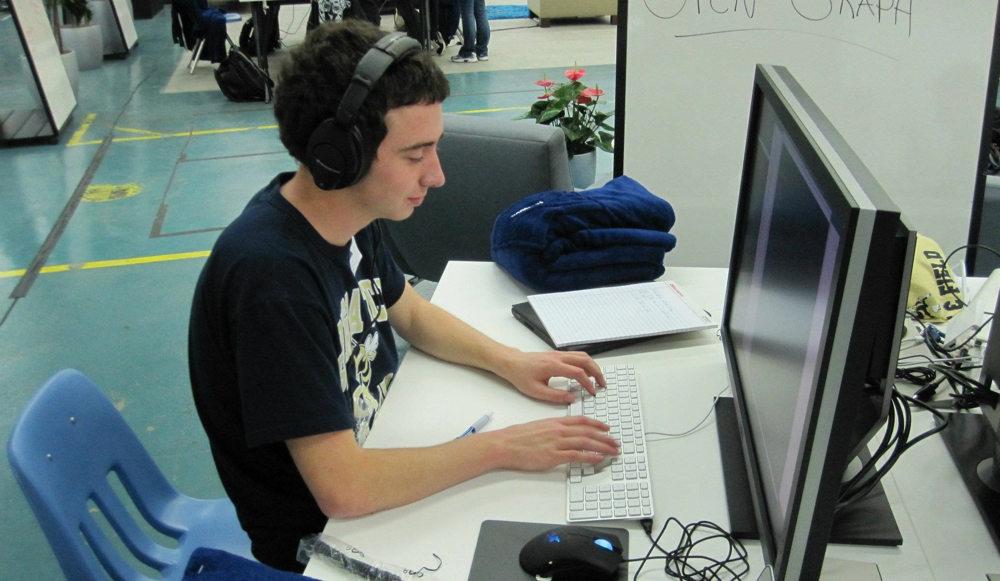

I'm Doug. I'm currently responsible for the design, scalability, and reliability of Twilio's API.
Before I moved to San Francisco, I grew up in North Carolina and went to school at Georgia Tech where I (surprise!) majored in Computer Science.
Follow me on twitter or github.
Programming
I began school as an Applied Mathematics major before realizing I was spending all of my free time programming so I switched to Computer Science. I believe this is one of the best decisions I've made in my life.
I've built Android apps, personal iOS apps, simulated out-of-order processors, won hackathons, and now I work on one of the best RESTful API's in the world.
I believe in vim, unix, python, http, and REST.

Running
I've spent a lot of time running. I started running in 7th grade, ran all through high school, and eventually spent four years incredible on the varsity Track and Field and Cross Country teams at Georgia Tech.
Listing PR's is something I've always detested, but I will say I was fortunate enough to compete in multiple ACC championships, South Region championships and I made one incredible trip to Penn Relays where I ran a very fast 10k. No one from Tech has since run a faster one, and I selfishly hope no one does for a while.
Cubing
Years ago I learned to solve a Rubik's cube. This is not impressive, as I just sat down and learned an algorithm from a website. Solving it very quickly, however, takes fast pattern recognition, good spatial memory, and lots of practice. My current fastest solve is 15 seconds, while my best average of 10 solves is 27 seconds. I'm fastest with Fridrich, but I'm also decently comfortable using Petrus.